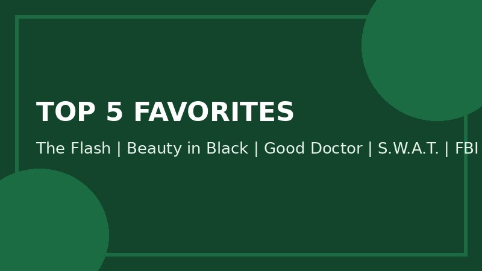

My Top 5 Favorites
- The Flash (2014): Fast-paced superhero action combined with forensic science and strong teamwork.
- Beauty in Black (2024): Dramatic storytelling full of suspense, ambition, and unexpected twists.
- The Good Doctor (2017): Inspiring medical cases that highlight empathy, problem-solving, and perseverance.
- S.W.A.T. (2017): High-energy tactical missions led by loyalty and split-second decision-making.
- FBI (2018): Engaging crime investigations that keep you guessing until the final clue.
My Favourite Playlist
The soundtrack that keeps me focused during study and report-writing sessions:
Listen on Spotify